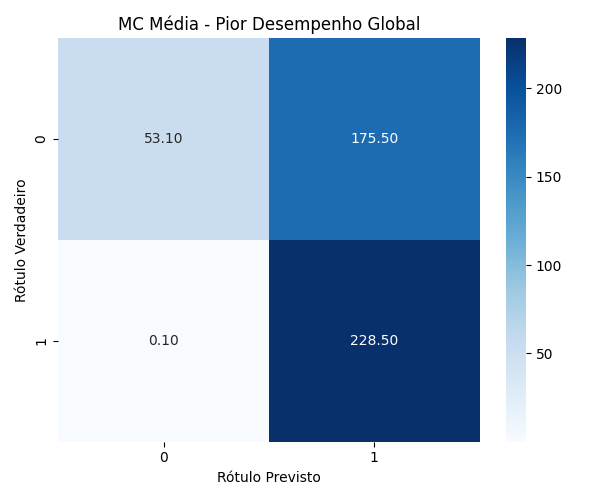

Resultados Globais
Estes são os melhores e piores resultados encontrados em todas as combinações de kernels e parâmetros.
| Melhor Desempenho Geral |
| Melhor Kernel | Radial Basis Function |
| Acurácia Média de Treino | 95.67% ± 0.04% |
| Acurácia Média de Teste | 95.38% ± 0.46% |
| Train time (seconds) |
0.40 ± 0.07 |
| Test time (seconds) |
0.03 ± 0.00 |
| Configuração (C, γ) | (1.000, 1.000) |
|
| Pior Desempenho Geral |
| Pior Kernel | Sigmoid |
| Acurácia Média de Treino | 61.59% ± 0.22% |
| Acurácia Média de Teste | 61.59% ± 2.00% |
| Train time (seconds) |
0.81 ± 0.02 |
| Test time (seconds) |
0.08 ± 0.01 |
| Configuração (C, γ) | (1.000, 1.000) |
|  |